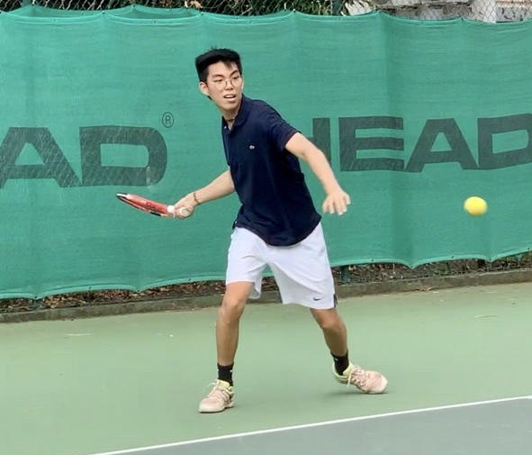
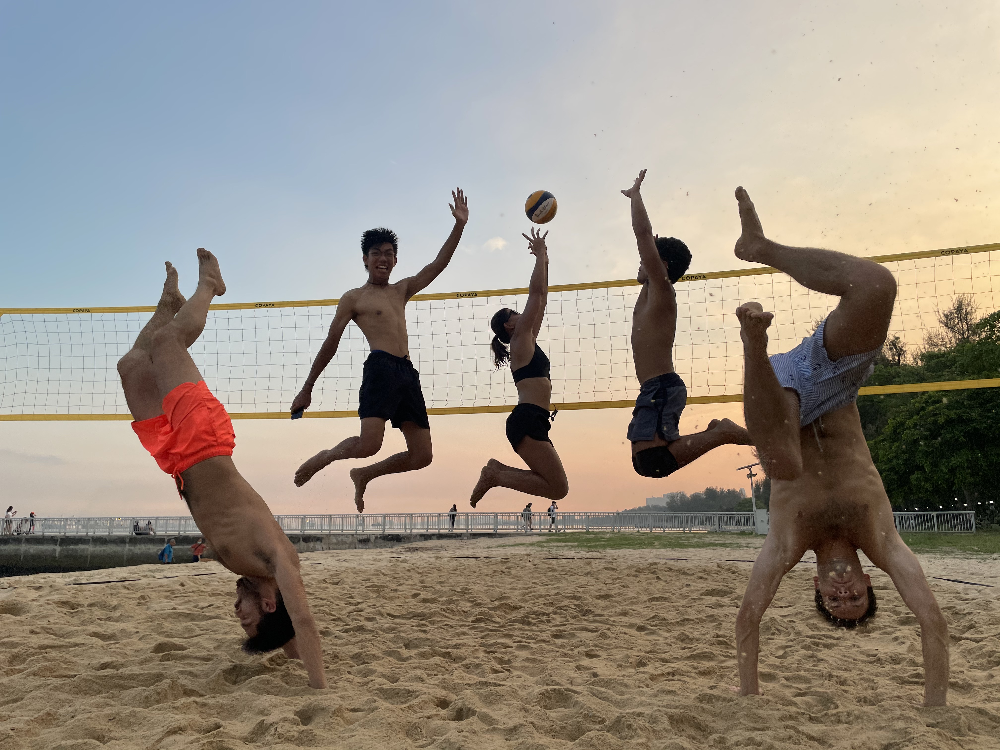
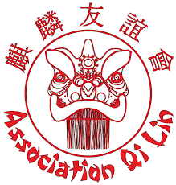

Hey! I'm Swan 🦢👋

I am a student for global bachelor in business administration at ESSEC Asia Pacific in Singapore. As part of my Global BBA, I am looking for a three-month internship in a company, starting in May 2021.
My LinkedinWho am I ❓❓❓
I come from Reunion Island, French born with Chinese origins, I grew up between a kind of mixity between eastern and western culture. I am 18 years old and I am currently living in Singapore for studying business. Always open-minded, my life experience taught me to adapt myself to every kind of situation and not to stay in my comfort zone, and that is why I am looking for a three-month internship, here in Singapore. I see this internship as an opportunity for me to work internationally, to learn new things, and to empower even more my skills. Later, I would like to be a CEO and take create my own business.
Hobbies
I like doing sports, photography 📸 and music 🎵 , traveling around the world ✈️. I am sports lover, I have played tennis 🎾 for 7 years and volley-ball 🏐 for 2 years. Always open-minded to discover new things.
 Association life
I am part of a lion dance association. I started my experience as a dancer. This association based in France, aims to transmit the Chinese values and principles but also Chinese traditions which are very important in our daily life. Today, from my knowledge and my experience, I was led to take responsibilities by directing the association as a manager. Moreover, I learned to organize service tours, to speak and to represent the association at assemblies. Finally, since I live currently far from France, I am taking in charge the communication of the organization as a role of community manager.
More about Qi lin Association